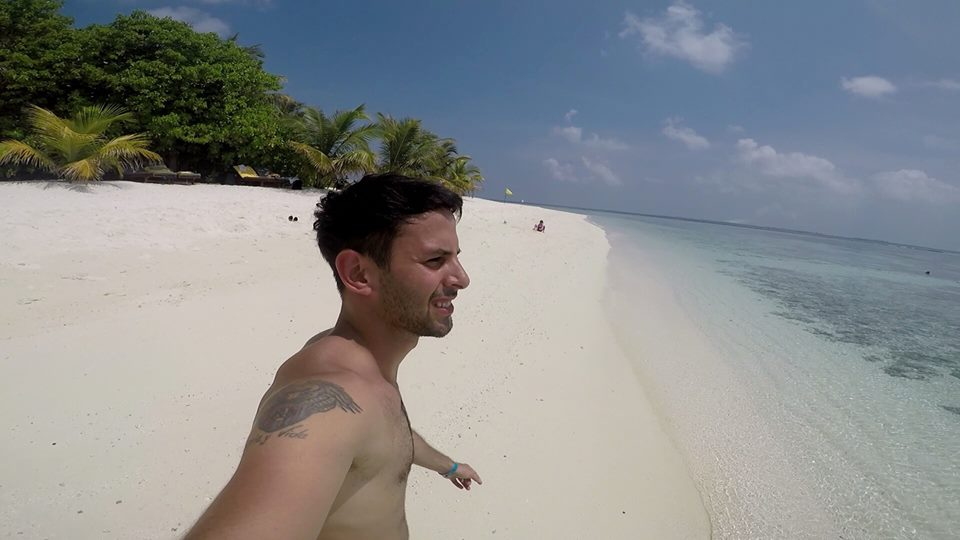
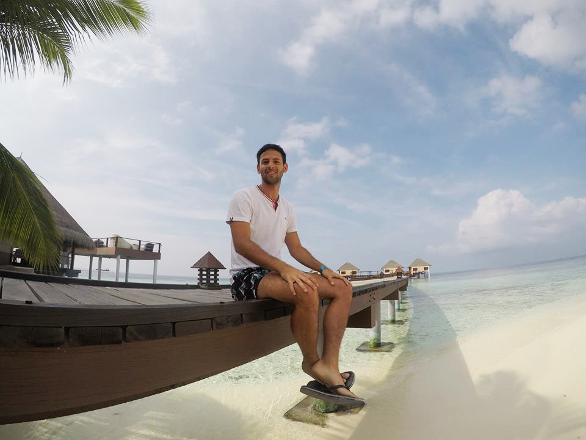

No es casualidad que estos dos lugares se encuentren juntos en un mismo escrito. Una isla es cara y la otra es seca. Malé es una ciudad portuaria, con gente local que vive de lo que regala el mar. Vaadhoo es una isla explotada por un resort donde llegan miles y miles de turistas anualmente. En la isla vas a poder vivir la perfecta luna de miel que no pueden disfrutar los nacidos en Malé por su alto costo. En cambio, en la capital del país vas a encontrar al perfecto lugar de conexión con los nativos que los "lunamelieros" prefieren pasar por alto. Malé tiene calles sucias pero sonrisas sinceras. Vaadhoo el agua más transparente que vi en mi vida pero cortesía comprada. Pueden ser localidades muy distintas, pero tienen algo en común, las dos forman parte del paraíso que es Maldivas.
Vaadhoo Island, Maldivas.
Un gran acierto. Cuando llegamos a Maldivas teníamos pensado pasar todas las vacaciones en Maafushi, los resorts ni siquiera eran una posibilidad de hospedaje debido a sus montos impagables. Sin embargo, estando allí, nos surgió un cosquilleó interno que decía ¿Estan acá y no van a conocer los bungalows de aquellas fotos que recorrieron el mundo entero mediante Google? El cosquilleó ganó y decidimos contratar una excursión de día completo a Vaadhoo Island donde existe solamente un hotel, el Adaaran Prestige Vadoo.
Vaadhoo Island, Maldivas.
La noche en este hotel cuesta alrededor de usd450 para dos personas, verdaderamente un imposible para un presupuesto medio. En cambio, la excursión de día completo (de las 10h hasta las 17h aproximadamente) cuesta 100usd por persona, lo sé, también es caro, pero nos permite disfrutar de las instalaciones del hotel, tener bebida libre (incluyendo bebidas alcohólicas), un almuerzo buffet (que deja bastante que desear en contraste con la categoría del hotel) y a la hora del te, sirven algunas bebidas y unas pocas cosas dulces.
. Vaadhoo Island, Maldivas.
Lo más importante del hotel es que nos regala vistas increíbles e indescriptibles muy distintas a las de Maafushi. En esta isla van a poder estar en escenarios magníficos, esos que vieron en todas las fotos de páginas de turismo, que parecen photoshopeadas pero son totalmente reales. El agua es sumamente cristalina tanto en Maafushi como en Vaadhoo, pero el tener de fondo los bungalows o poder disfrutar de la esquina de la isla donde la arena se mezcla con el mar brindando una sensación impresionante de infinitud son experiencias que valen, sin lugar a dudas, los usd100.
Los precios y horarios están sujetos a constantes cambios. Te recomiendo que los chequees en la página oficial de Adaaran Prestige Vadoo o en el hospedaje que contrataste en Maafushi ya que ellos también venden las excursiones de medio día a los resorts.
Snorkel en Vaadhoo Island, Maldivas.
El último día en Maldivas, decidimos salir temprano hacia el aeropuerto para no tener ningún inconveniente con nuestro vuelo. Al llegar, dos vendedores nos ofrecieron hacer una visita rápida a Malé y mi respuesta fue casi automática: SÍ. Era un placer conocer una ciudad más, aunque sea por poco tiempo, y sobre todo la capital de Maldivas.
Fue una recorrida breve (2hs) en donde pudimos ver varios puntos turísticos de la ciudad, como la Mezquita y el Palacio Presidencial. Además, monumentos que representan hitos históricos de las guerras civiles sufridas en Maldivas, el mercado de pescados y lo más bonito al menos para mí, la zona portuaria, donde hay gente con cañas de pesca y se pueden ver grandes rayas nadando muy cerca de la costa.
Sin embargo, lo que verdaderamente llamó mi atención fueron las personas y su forma de vida. Es un mundo contrapuesto al de los resorts, la gente esta muy encimada, las calles estan bastantes sucias y las motos se adueñan de cada espacio. El guía nos explicó que esta sobrepoblado Malé y que estan buscando crear islas nuevas para poder reducir la población en la Capital.
En fin, Maldivas tiene dos caras, la de los que viven en sus tierras y la de los turistas que vienen a conocer el paraíso. Les recomiendo al menos una tarde en la capital para conocer más de cerca la cultura de los maldivos, fue aquí que me sucedió una de las charlas más extrañas que tuve en mi viaje, la cual me produjó un choque cultural muy interesante: Estaba en una tienda de regalos, viendo pareos y de repente se me acerca inquietantemente el vendedor, me mirá y me pregunta ¿Cuántas mujeres tenés? Yo me reí fuertemente, lo observé y me di cuenta que me preguntaba en serio, conteste que solo una, pensando para mis adentros que en realidad no es una cuestión de tener o no tener, las personas no se tienen ¿Pero cómo le explicaba esa inquietud existencial y en qué idioma? El se sonrío y me dijo que él tenía 3. Un argentino y un maldivo, un cristiano que cada día se vierte más para el ateísmo y un musulmán con 3 esposas, todo eso coalicionó en una simple tienda. Eso es Malé.